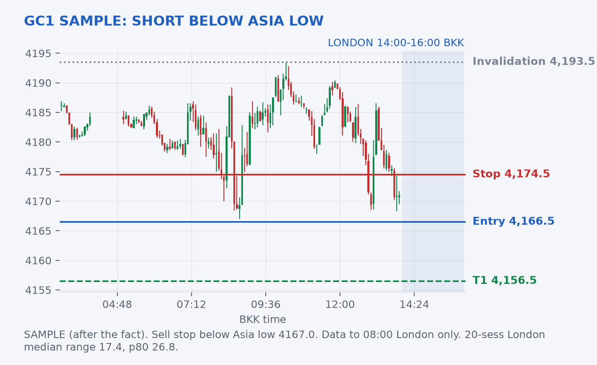
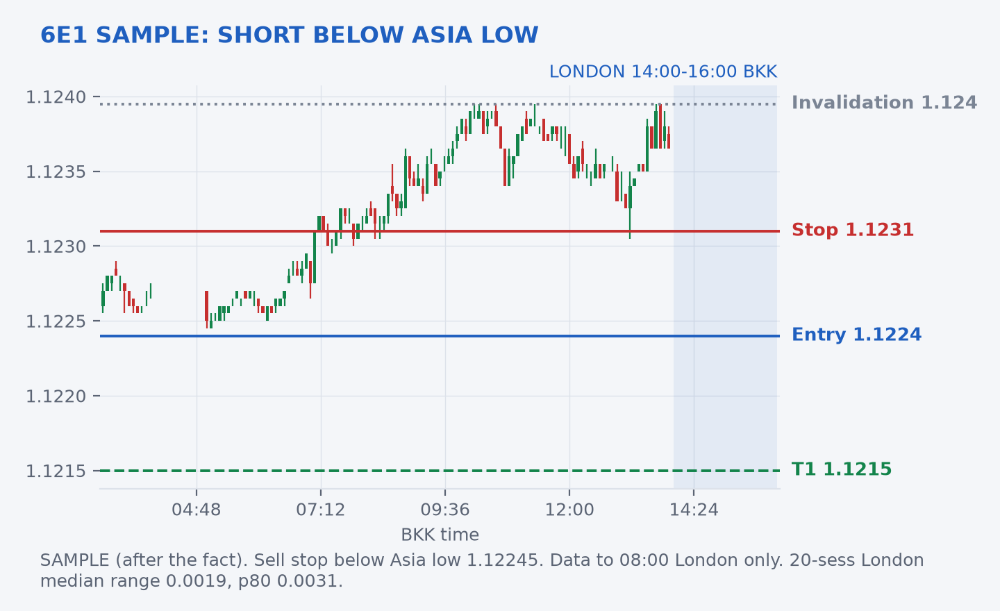

SAMPLE: WRITTEN AFTER THE FACT, NOT A LIVE CALL
This sheet was produced at ~14:10 BKK, after the London window opened, to show the format. Levels use only TopstepX data before 08:00 London (14:00 BKK). It is excluded from Jim's calibration log. Not financial advice.JIM · LONDON TRADE SHEET (SAMPLE) · WED OCT 14
GC1 and 6E1: fade-the-break shorts below the Asia lows
Window: 08:00–10:00 London (14:00–16:00 BKK). Contracts: GC = CON.F.US.GCE.Z26, 6E = CON.F.US.EU6.Z26 (5-minute bars, read-only).
Context (April's brief): US CPI is at 19:30 BKK, after this window, so London is pre-event positioning. Gold ~4,160 and drifting lower, dollar slipped into CPI. Expect normal-to-quiet London ranges; the binary risk comes later.
Projected volatility (last 20 London sessions, data to 08:00 London)
| Last | Median range | 80th pct range | 5m ATR | Asia H / L | Prior day H / L |
|---|
| GC1 | 4,171.0 | 17.4 | 26.8 | 5.0 | 4,193.5 / 4,167.0 | 4,224.8 / 4,169.7 |
| 6E1 | 1.12365 | 0.00190 | 0.00311 | 0.00020 | 1.12395 / 1.12245 | 1.12330 / 1.11825 |
Idea 1: GC1 short on a break of the Asia low
- Entry: sell stop 4,166.5 (0.5 under Asia low 4,167.0, also just under yesterday's low 4,169.7)
- Stop: 4,174.5 (8.0, back inside the Asia range) · Target: 4,156.5 (10.0, about 0.6× median range) · R:R 1.25
- Projected vol: median London range 17.4, p80 26.8, so a 10-point extension is inside a normal session.
- Estimated probability of target before stop: ~50%. Basis: same rule over the last 27 London sessions triggered 10 times: 6 hit target, 2 stopped, 2 ended flat. Small sample, so shaded down from 60%. If it does not trigger, no trade.

Idea 2: 6E1 short on a break of the Asia low
- Entry: sell stop 1.12240 (just under Asia low 1.12245)
- Stop: 1.12310 (7 pips) · Target: 1.12150 (9 pips, about half the median range) · R:R 1.3
- Projected vol: median London range 19 pips, p80 31 pips.
- Estimated probability: ~40%. Basis: the rule triggered 10 of 27 sessions: 5 target, 4 stop, 1 flat. That is close to a coin flip on a small sample, and price sits near the Asia high, so trigger odds are lower. Long breakouts above the Asia high did worse (3 target / 5 stop of 11), so no long idea.

Risk rules- Orders only valid 08:00–10:00 London; cancel untriggered orders at 10:00.
- Flat well before 19:30 BKK CPI.
Hindsight (clearly after the fact)
At the time of writing (~14:10 BKK) the window had just opened. Only the first 5-minute bar was available: GC 4,170.5 → 4,175.2 / 4,167.6 → 4,171.7 and 6E 1.12365 → 1.12365 / 1.12315 → 1.12340. Neither entry had triggered yet. The outcome is not known and is not scored.
Data: TopstepX read-only bars. Probabilities are rough estimates from small historical samples. Not financial advice.
|